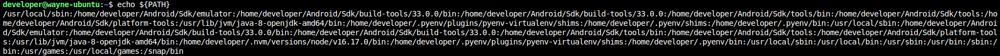

Setup Linux for Android and iOS Automation¶
Use Ubuntu 20.04 as environment
Step 1: Install Java8(OpenJDK version "1.8.0_342")¶
Step 2: Setup Java Path¶
# Set Java Path
export JAVA_HOME="/usr/lib/jvm/java-8-openjdk-amd64"
export PATH="$JAVA_HOME/bin:$PATH"
Verify Java Version
Step 3: Install Android Studio¶
-
Add android studio official repository into your system.
-
After successfully adding the android repository, you will update your system
apt-cacheby the follow command -
After updating
apt-cache, it's time to installAndroid Studiobyaptpackage manager. Below command will help you install it with all its dependencies -
Launch Android Studio by application launcher searcher. After launching the application, you will need to install
Android SDKandSDK Tools. -
Install Android SDK platform

-
Install SDK Tools
Step 4: Setup Required path for Android Studio¶
-
Open
~/.bashrcand add below commands.# Android Path export ANDROID_HOME="/home/$( whoami )/Android/Sdk" export PATH="$ANDROID_HOME/platform-tools:$PATH" export PATH="$ANDROID_HOME/tools:$PATH" export PATH="$ANDROID_HOME/tools/bin:$PATH" export PATH="$ANDROID_HOME/build-tools/33.0.0:$PATH" export PATH="$ANDROID_HOME/build-tools/33.0.0/bin:$PATH" export PATH="$ANDROID_HOME/emulator:$PATH" -
Note that this setting
ANDROID_HOMEandPATHdoesn't load into the session. Please execute below commands to make sure all things are right

-
Verify android SDK and SDK tools are right or not
Step 5: Install NVM¶
NMV is an open-source tool used for managing node version
sudo apt install curl
curl https://raw.githubusercontent.com/creationix/nvm/master/install.sh | bash
Step 6: Install Appium¶
# Download node.js with v16.17.0
nvm install v16.17.0
# Set v16.17.0 as node default version
nvm alias default 16.17
# Install appium and appium-doctor on global
npm install -g appium@1.22.3 appium-doctor
# Diagnostic your current environment for iOS
appium-doctor --ios
# Diagnostic your current environment for android
appium-doctor --android
Step 7: Install Python and tidevices¶
-
Install Python
More details can refer to here
-
Install tidevices
tidevice is an open-source which is used for communicate with iOS device and execute the WDA(WebDriverAgent) without Xcode.
Step 8: Install Required Packages and Tools¶
-
FFmpeg
-
socat
-
A small portable C library to handle Apple Property List files in binary or XML format
-
Install all required dependencies and build tools:
-
Then clone the actual project repository
-
Build and install it
-
A library to communicate with services on iOS devices using native protocols
-
Redirects the standard usbmuxd socket to allow connections to local and remote usbmuxd instances so remote devices appear connected locally.
Note: Before installing the usbfluxd, you need to make sure
libplisthas been installed -
Clone the repository and change the current directory
-
Build and install it
-
Add the new path into
~/.bashrc -
Verify all installation
-
Prepare an iOS device and and connect to the computer through out the USB cable, then open the terminal typing the below commands
-
If usbmuxd doesn't activate, typing the below command to start it.
-
After the usbmuxd has been started, then using
socatto expose/var/run/usbmuxdon port 5000 -
Open a new terminal and use
usbfluxdto redirect the standardusbmuxdsocket to allow connections to local and remote device appear locally# Get ip address IP_ADDR=$( ip route get 1.2.3.4 | awk -F " " '{print $7}' ) # Redirect the socket sudo usbfluxd -f -r ${IP_ADDR}:5000